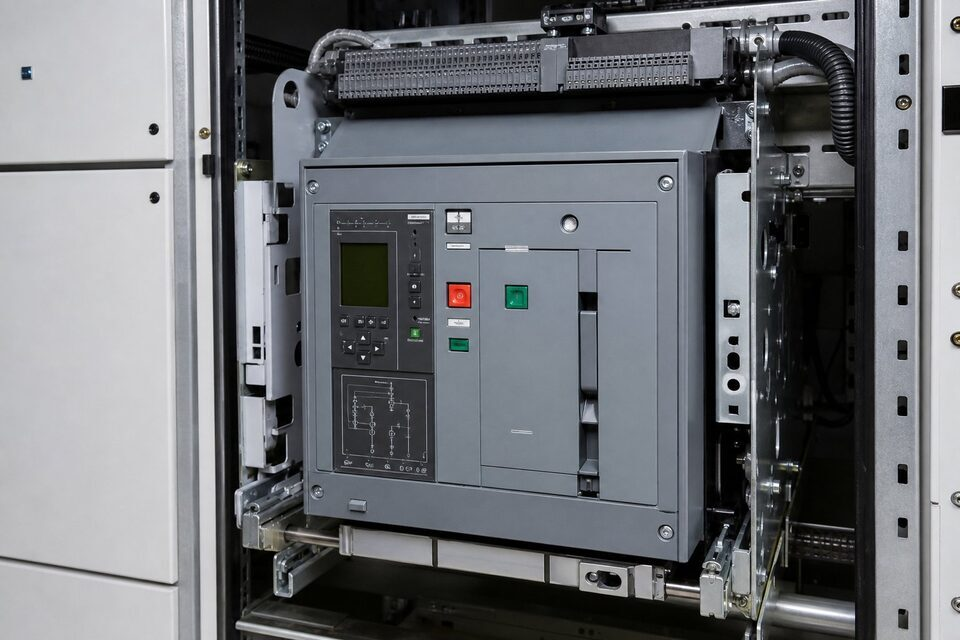

نقش کلید هوایی در شبکه
در هر سیستم برق فشار ضعیف، نقطهای که انرژی از ترانسفورماتور یا منبع اصلی وارد تابلوها میشود، به کلیدی نیاز دارد که هم زیر بار قطع و وصل کند و هم در خطا، شبکه را سریع و مطمئن ایزوله نماید. کلید هوایی این نقش را در جریانهای بالا ایفا میکند: ساختار مقاوم، اتاقکهای قطع قوی و واحدهای حفاظتی قابل تنظیم، آن را به انتخاب استاندارد ورودی تابلوهای اصلی تبدیل کرده است. انتخاب و تنظیم درست این کلید، پایه هماهنگی حفاظتی کل مجموعه است؛ خطا در آن میتواند به قطع بیمورد یا بدتر، عدم قطع در خطا منجر شود.

ساختار و عملکرد
یک کلید هوایی از چند بخش اصلی تشکیل شده است: کنتاکتهای اصلی و قطع سریع، مکانیزم ذخیره انرژی (فنر شارژشده با موتور یا دستی)، اتاقک قطع برای خاموش کردن قوس الکتریکی و واحد حفاظتی. هنگام خطا، واحد حفاظتی فرمان قطع میدهد و انرژی ذخیرهشده فنر، کنتاکتها را با سرعت بالا جدا میکند. ساختار کشویی نیز امکان خارج کردن کلید برای تست و نگهداری بدون قطع کامل شینها را فراهم میسازد؛ در بسیاری طرحها موقعیتهای وصل، تست و جدا به صورت مکانیکی قفل میشوند تا ایمنی بهرهبرداری حفظ گردد.
واحد حفاظتی و تنظیمات
- حفاظت اضافه بار با تاخیر بلندمدت: متناسب ظرفیت کابل و ترانسفورماتور.
- حفاظت اتصال کوتاه کوتاهمدت: با تاخیر کوتاه برای هماهنگی با کلیدهای پاییندست.
- حفاظت لحظهای: برای خطاهای بسیار بزرگ در نزدیکی کلید.
- حفاظت زمین: در مدلهای مجهز، برای خطاهای اتصال به زمین.
- امکانات اندازهگیری و ارتباطی در واحدهای دیجیتال.
معیارهای انتخاب
انتخاب کلید هوایی باید بر اساس مطالعه اتصال کوتاه و هماهنگی حفاظتی انجام شود، نه فقط جریان بار. چهار پارامتر اصلی: جریان نامی متناسب بار و ترانسفورماتور، قدرت قطع بالاتر از جریان اتصال کوتاه محاسبهشده، تعداد پل متناسب سیستم و نوع واحد حفاظتی با قابلیتهای موردنیاز. لوازم جانبی نیز اهمیت دارند: کنتاکتهای کمکی برای مانیتورینگ، موتور شارژ برای وصل مجدد سریع و قفلهای ایمنی برای رویههای بهرهبرداری. در استعلام، تکخطی شبکه و نتایج مطالعه اتصال کوتاه را ارائه دهید تا پیشنهاد دقیق دریافت شود.
نگهداری و تست دورهای کلید هوایی
کلیدهای هوایی معمولا دهها سال عمر میکنند، به شرطی که نگهداری منظم آنها بر اساس برنامه مشخص انجام شود؛ در غیر این صورت، اولین قطع اضطراری میتواند همان لحظهای باشد که کلید عمل نمیکند. نگهداری کلید هوایی در چند سطح انجام میشود. سطح اول، بازرسیهای دورهای بدون قطع است: کنترل دمای اتصالات با ترموگرافی برای شناسایی نقاط داغ، بررسی وضعیت مکانیزم شارژ فنر و شمارگر تعداد قطع و وصل، و کنترل وضعیت نشانگرها و قفلها. سطح دوم، سرویس در زمان تعمیرات است که شامل خارج کردن کلید از مدار، تمیزکاری داخل محفظه از غبار که در ولتاژهای بالا ریسک تخلیه سطحی را افزایش میدهد، بازرسی کنتاکتهای اصلی و قوسگیر از نظر فرسایش و کنترل روانی حرکت مکانیزم است. فرسایش کنتاکت در کلیدهای هوایی با شمارگر قطع و مقایسه با جدول سازنده ارزیابی میشود و کنتاکتهایی که به حد فرسایش رسیدهاند باید تعویض گردند. سطح سوم، تستهای حفاظتی است؛ واحد حفاظتی کلیدهای مدرن باید به صورت دورهای با تزریق جریان ثانویه تست شود تا صحت منحنیهای عملکردی و زمان قطع در هر سطح حفاظتی تایید گردد. این تستها معمولا با تجهیزات مخصوص و توسط تیم متخصص انجام میشوند و نتایج آنها باید با مقادیر تست قبلی مقایسه گردد. در مکانیزم قطع و وصل، روانکاری متناسب نقاط مشخصشده توسط سازنده و کنترل وضعیت کویلهای قطع و وصل اهمیت دارد؛ خرابی کویل قطع، کلید را در لحظه خطا بیاثر میکند حتی اگر بقیه اجزا سالم باشند. نکته مهم، مستندسازی هر سرویس است؛ شماره سریال، تاریخ سرویس، شمارگر قطع، نتایج تستها و قطعات تعویضشده باید در پرونده تجهیز ثبت شوند تا عمر باقیمانده قابل پیشبینی باشد و در ممیزیها، برنامه نگهداری قابل دفاع باشد.
جمعبندی
کلید هوایی، ستون حفاظت شبکه فشار ضعیف است: انتخاب آن با مطالعه اتصال کوتاه و تنظیم واحد حفاظتی بر اساس هماهنگی حفاظتی انجام میشود. با ذکر پارامترهای الکتریکی و مدارک مطالعه در استعلام، میتوان کلیدی دریافت کرد که هم در بهرهبرداری عادی قابل اتکا باشد و هم در خطا، سریع و انتخابپذیر عمل کند.
سوالات رایج
کلید هوایی چیست و کجا استفاده میشود؟
کلید قدرت فشار ضعیف با قابلیت قطع و وصل زیر بار و حفاظت در برابر اضافه بار و اتصال کوتاه؛ معمولا در ورودی تابلوهای اصلی و نقاطی که جریانهای بالا و قابلیت اطمینان قطع اهمیت دارد نصب میشود.
واحد حفاظتی قابل تنظیم چه مزیتی دارد؟
امکان تنظیم دقیق منحنی حفاظت (اضافه بار، اتصال کوتاه کوتاهمدت و لحظهای) متناسب مطالعه اتصال کوتاه شبکه؛ این هماهنگی، انتخابپذیری حفاظت بین کلیدهای بالادست و پاییندست را ممکن میسازد.
تفاوت کلید هوایی و کلید کمپکت چیست؟
کلید هوایی برای جریانهای بالاتر، قابلیت تنظیم گستردهتر و قابلیت نگهداری بیشتر طراحی شده و معمولا کشویی است؛ کلید کمپکت برای رنجهای پایینتر و فضاهای محدودتر انتخاب میشود.
پارامترهای اصلی انتخاب کداماند؟
جریان نامی، قدرت قطع، تعداد پل، نوع واحد حفاظتی و لوازم جانبی مانند کنتاکت کمکی، موتور شارژ و قفل؛ همه باید با مطالعه حفاظتی شبکه هماهنگ باشند.
مطالب مرتبط
با ذکر جریان نامی، قدرت قطع و واحد حفاظتی، کلید هوایی از برندهای معتبر عرضه میشود.
مشاهده صفحه محصول ← ثبت RFQ همین محصولتامین این تجهیزات را به پیشرو تجهیز فرتاک بسپارید
شرکت پیشرو تجهیز فرتاک تامینکننده تخصصی تجهیزات صنعتی برای پروژههای نفت، گاز، پتروشیمی، فولاد و نیروگاهی است. برای دریافت پیشنهاد فنی و قیمت، استعلام (RFQ) خود را ثبت کنید تا کارشناسان مهندسی فروش در کوتاهترین زمان پاسخ دهند.
- تامین برق صنعتیتجهیزات تابلو و حفاظتی
- تامین تجهیزات صنایع نفت و گازپکیج مواد مطابق وندورلیست